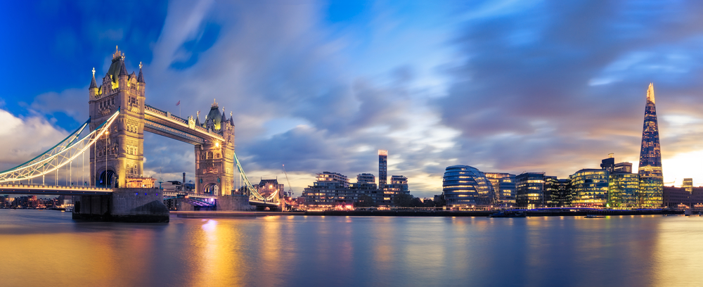

<p>
    <br />
    Но некоторые фотографии достопримечательностей можно посмотреть тут:
    <br />
    <!--Основной блок слайдера-->
    <div class="slider">
        <!--Первый слайд-->
        <div class=" picture" style="display:block">
            <h3>Лондон</h3>
            
        </div>
        <!--Второй слайд-->
        <div class=" picture" style="display:none">
            <h3>Нью Йорк</h3>
            
        </div>
        <!--Третий слайд-->
        <div class=" picture" style="display:none">
            <h3>Санкт-Петербург</h3>
            
        </div>

        <!-- Кнопки-стрелочки -->
       
        <a class="prev" style="display:block" onclick="nextSlide(-1)">&#10094;</a>
        <a class="next" onclick="nextSlide(1)">&#10095; </a>

    </div>

    <!--Кружочки-->
    <div class="slider_dot" style="text-align:center" ;>
        <div class="dot active_dot" onclick="currentSlide(1)"></div>
        <div class="dot" onclick="currentSlide(2)"></div>
        <div class="dot" onclick="currentSlide(3)"></div>
    </div>

</p>
